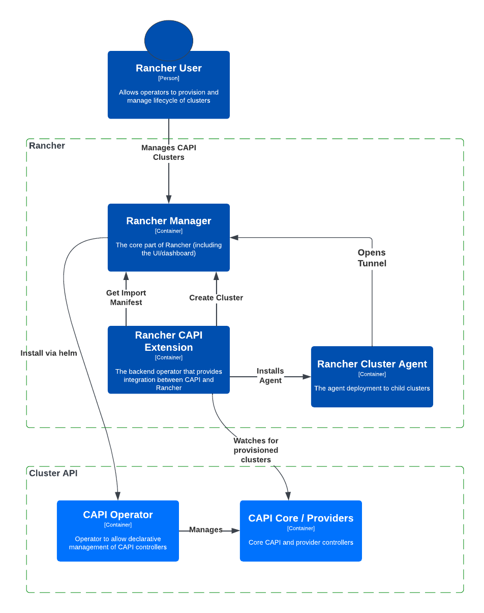

|
Dieses Dokument wurde mithilfe automatisierter maschineller Übersetzungstechnologie übersetzt. Wir bemühen uns um korrekte Übersetzungen, übernehmen jedoch keine Gewähr für die Vollständigkeit, Richtigkeit oder Zuverlässigkeit der übersetzten Inhalte. Im Falle von Abweichungen ist die englische Originalversion maßgebend und stellt den verbindlichen Text dar. |
Architektur
Dieser Leitfaden bietet einen umfassenden Überblick über die Kernelkomponenten und die Struktur, die SUSE® Rancher Prime Cluster API antreiben und deren Integration in das Rancher-Ökosystem.
Ein Rancher-Benutzer wird Rancher verwenden, um Cluster zu verwalten. Rancher wird in der Lage sein, die Cluster-API zu nutzen, um den Lebenszyklus von untergeordneten Kubernetes-Clustern zu verwalten.

Komponenten
Im Folgenden finden Sie eine visuelle Darstellung der Architekturkomponenten von Rancher Turtles. Dieses Diagramm veranschaulicht die Schlüsselelemente und deren Beziehungen innerhalb des SUSE® Rancher Prime Cluster API-Systems. Das Verständnis dieser Komponenten ist entscheidend, um Einblicke zu gewinnen, wie Rancher die Cluster-API (CAPI) für das Cluster-Management nutzt.

Rancher Manager
Dies ist die Kernelkomponente von Rancher, und Benutzer können die vorhandene Explorer-Funktion im Dashboard nutzen, um auf die Arbeitslastdetails der Cluster zuzugreifen.
Rancher Cluster Agent
Der Agent wird innerhalb der untergeordneten Cluster bereitgestellt, wodurch Rancher in der Lage ist, diese Cluster zu importieren und eine Verbindung zu ihnen herzustellen. Diese Verbindung ermöglicht es Rancher, die untergeordneten Cluster effektiv von seiner Plattform aus zu verwalten.
SUSE® Rancher Prime Cluster API - Rancher CAPI Erweiterung
Es bietet eine Integration zwischen CAPI und Rancher und unterstützt derzeit die folgenden Funktionen:
-
Importieren von CAPI-Clustern in Rancher: Installation des Rancher Cluster Agent in CAPI-bereitgestellten Clustern.
-
CAPI Operator-Konfiguration: Konfigurationsunterstützung für den CAPI-Operator.
Implementierungstopologie
Rancher Manager & CAPI-Management kombiniert
Dies ist die einzige derzeit unterstützte Topologie, bei der sowohl Rancher Manager als auch SUSE® Rancher Prime Cluster API im selben Kubernetes-Cluster bereitgestellt werden und als zentrales Management-Cluster fungiert.
Diese Architektur bietet eine vereinfachte Implementierung von Komponenten und ermöglicht eine einheitliche Ansicht aller Cluster. Auf der anderen Seite ist es wichtig zu berücksichtigen, dass die Anzahl der Cluster, die effektiv von Cluster API (CAPI) verwaltet werden kann, durch die Ressourcen innerhalb des einzelnen Management-Clusters begrenzt ist.